Inconsistencies in "States daily 4 pm ET"
These are instances in which the cumulative count of pos/neg on a given day are less than the previous day:
Negative: NM on 03-08 CO on 03-10 MS on 03-13 UT on 03-13 CO on 03-15 ID on 03-15 NJ on 03-16 NY on 03-16 AZ on 03-17
Positive: NV on 03-10 DC on 03-11
The NY error is likely because someone tried to keep the “total tests” number constant while using the positives number from the website. They should have carried forward the negative count from the previous day.
20200316 NY 950 4,322 7 5,272 20200315 NY 729 4,543 3 5,272
The CO 3/10 error is likely because they switched from reporting samples to people.
20200309 CO 9 266 275 20200310 CO 12 142 1 155
The NJ error is an odd one. It looks like we tried to carry forward the 120 from the previous day and just missed the leading 1.
Here are the checkers/double checkers: PR, AM (3/17); SD, AM (3/16); PR, SJ (3/15).
20200317 | NJ | 267 | 163 | 55 | 3 | 485 20200316 | NJ | 178 | 20 | 20 | 2 | 218 20200315 | NJ | 98 | 120 | 34 | 2 | 252
I can’t explain the CO 3/15 error…
20200315 | CO | 131 | 627 | | 1 | 758 20200314 | CO | 101 | 712 | | 1 | 814
NJ Is now cleaned up. I assumed that the negatives hold steady on the 14th as the data seems to be following a similar pattern before and after. 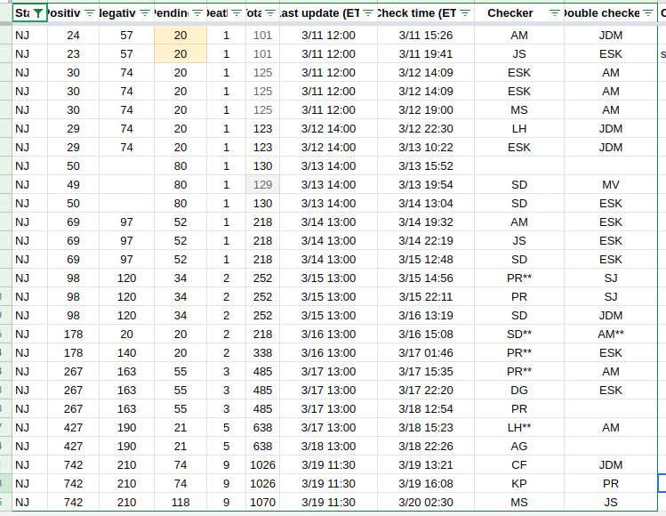
NJ Updated: 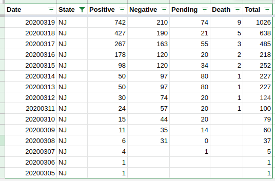
NY Checks: 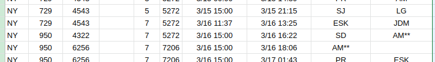
NY Updated: 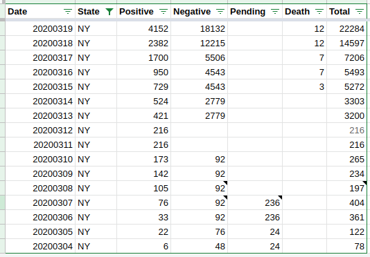
CO error on 2/14 appears to be the total being entered into the negative column and it adds the deaths (maybe a formula?): 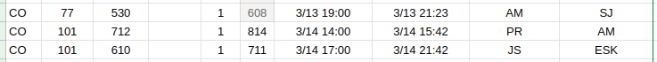
CO incorrect total and migrated 3/5 through 3/9 negatives from “tests” to cases by dividing by 2 and rounding up: 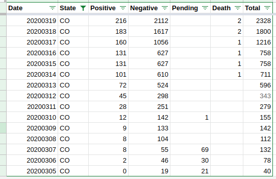
AZ looks like a data entry error on negatives: 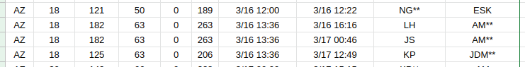 AZ corrected: 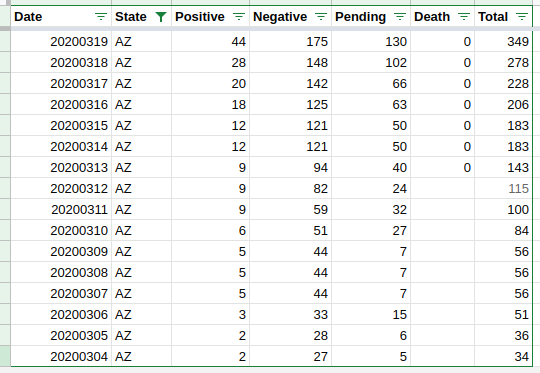
MS is not clear what happened - maybe someone tried to keep the total fixed, and adjusted the negatives on accident: 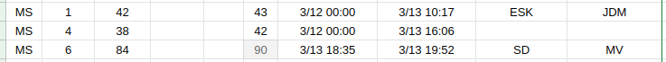
MS Fixed, carrying negatives forward: 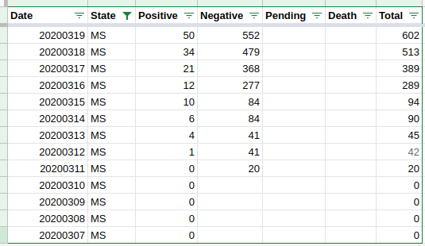
NM Does not have any checks data until after the publish time. Reverting the negatives to match day prior:

UT looks like either something changed on the website, or it was just a bad entry as the negatives stay fixed for quite a while: 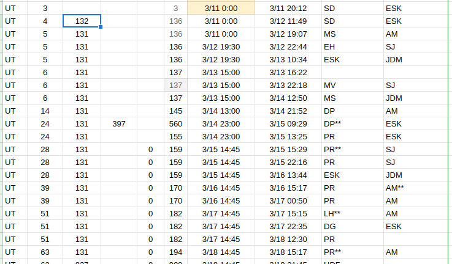
Reverting UT negatives on to 131 to smooth it out: 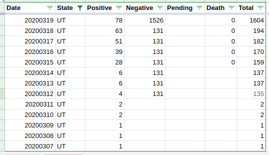
ID is a little strange, not quite sure what to do here: 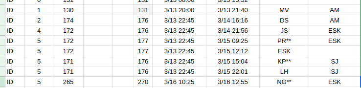
The NJ error is an odd one. It looks like we tried to carry forward the 120 from the previous day and just missed the leading 1.
Here are the checkers/double checkers: PR, AM (3/17); SD, AM (3/16); PR, SJ (3/15).
20200317 | NJ | 267 | 163 | 55 | 3 | 485 20200316 | NJ | 178 | 20 | 20 | 2 | 218 20200315 | NJ | 98 | 120 | 34 | 2 | 252
What actually happened here is that New Jersey changed the way they were reporting negatives. And so their negative total dropped. It sucked. That’s also when they said they were only reporting negatives from the state lab!
The only one that flummoxes me is ID. I think we’d almost certainly have to go back to the AWS logs. Their data looked clean coming in, but maybe they were fiddling with the margins.
Based on our screenshot and anecdotal evidence, I am going to make a judgment call that ID reported some numbers out of sync and our math caused the fluctuation. *Once a negative, always a negative.
{kind=link}
Before: 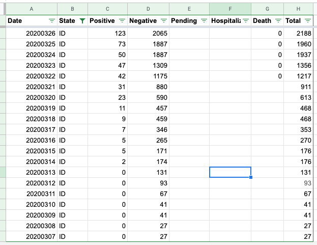
After: 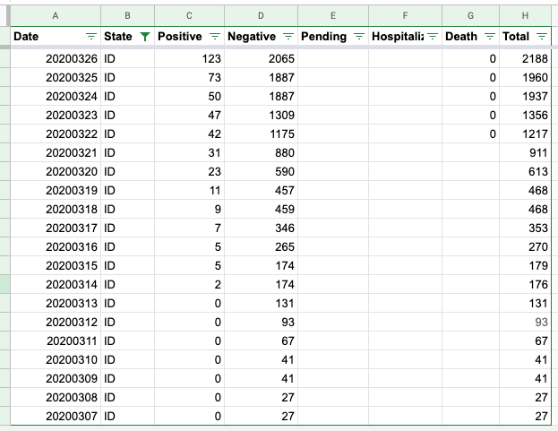
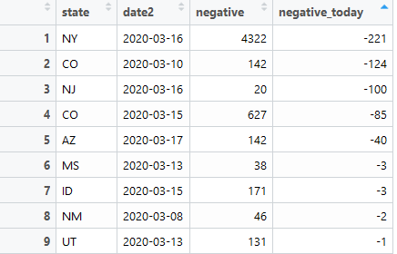